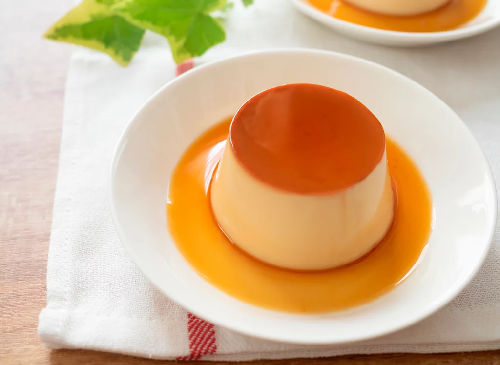

Flan Casero de Vainilla
Postre aterciopelado, ligero y rápido de preparar. Ideal para terminar una cena con un toque elegante.
Ingredientes:
- 4 Huevos
- 1 Lata leche condensada (395 g)
- 1 Lata crema de leche (360 ml)
- 1 Cucharadita de esencia de vainilla
- 1 GTaza de azucar
Preparación:
- Preparar el caramelo
- Colocar la taza de azúcar en una sartén a fuego medio.
- Calentar hasta que se derrita y tome un color dorado (sin quemarse)
- Verter el caramelo en un molde para flan y cubrir el fondo.
- Mezclar los ingredientes
- En una licuadora, agregar los huevos, la leche condensada, la crema de leche y la vainilla.
- Batir hasta obtener una mezcla homogénea.
- Hornear a baño Maria
- Verter la mezcla en el molde con caramelo.
- Colocar el molde dentro de una bandeja con agua caliente (baño María)
- Hornear a 180 °C durante 45 minutos o hasta que al insertar un palillo salga limpio.
- Enfriar y desmoldar
- Dejar enfriar a temperatura ambiente y luego refrigerar por 2 horas.
- Pasar un cuchillo por los bordes y desmoldar con cuidado.
- Servir
- Decorar con un poco de caramelo líquido o frutas frescas al gusto.